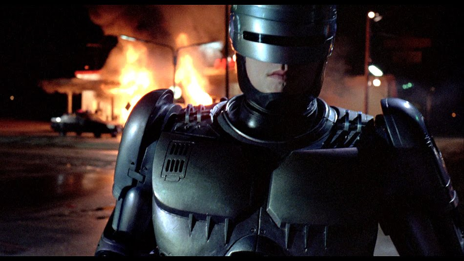

Robocop, part man part machine, is arguably director Paul Verhoffens most critically acclaimed film. Starring Peter Wellar as the hero cyborg, Nancy Allen as his helpful partner, the excellent Kurtwood Smith in his most famous role of the villan Clarence Boddiker and Ronny Cox as Dick Jones, this film is one of the true 80's action/sci-fi classics of the decade. Detroit patrolman Alex Murphy is gunned down and killed by a ruthless set of gang members led by Boddiker (Smith) and becomes the basis of an experimental cyborg programe by a company called OCP.
Taking to the streets to fight crime in old Detriot Robocop begins to remember parts from his human past and sets out to bring his murderers in, dead or alive, all the while assisted by his partner anne Lewis (Allen). The movie ends with a showdown between Robocp and the gang members who murdered him, aswell as defeating the evil OCP vice president who attempts to rid Robocop in place of his own OCP project, Dick Jones (Cox).
Like the tormented figure at its center, this movie combines the mechanical with the human. And though much of the film is made up of spare parts from cop shows, exploitation flicks and comic books, it nevertheless comes to life.
Jay Boyar - Orlando Sentinel
Verhoeven's strong suits have always been visual energy and a Rabelaisan realism: a gutsy, jovial way of ripping through social systems.
Michael Wilmington - Los Angeles Times
There's a brooding, agonized quality to the violence that almost seems subversive, as if Verhoeven were both appalled and fascinated by his complicity in the toxic action rot.
Pat Graham - Chicago Reader
A perfect version of the thing it sets out to be, one of the most intellectual and propulsive of all '80s action films.
Tim Brayton - Antagony & Ecstasy
